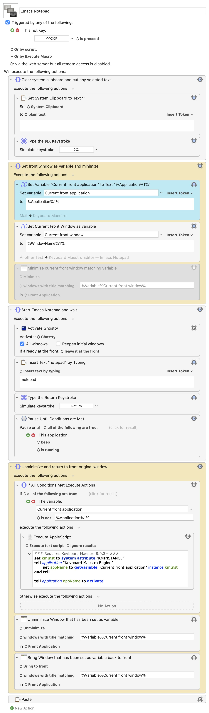

Replicating Emacs Everywhere with Keyboard Maestro
Jan 20, 2025 18:16
I’ve always loved the idea of Tecosaur’s Emacs Everywhere, but when I looked at the code it seemed like quite a bit of overhead for someone who just uses one operating system. I tried to pull out just the portions relating to the Mac, but couldn’t make it work. I’ve been running Keyboard Maestro for a long time now thinking that maybe someday I would use it to automate something. Since I couldn’t bring myself to watch the inauguration today, it seemed like a good idea to finally use it.
As always, I’ll start with this disclaimer: I am an amateur elisp hack. I borrow and steal from others, cobbling things together that never initially work, then fiddle with them until they finally do what I had intended. With that out of the way, here’s what I put together.
Notepad Mode
I wanted to use C-c C-c to easily quit and return to the initial application. The easiest way for me to do this was to create a new mode. Since I write everything with Org mode, it makes sense to just use it with a different name. I also defined a new keymap that calls a function that is defined below.
(defvar-keymap notepad-mode-map "C-c C-c" #'copy-kill-buffer) (define-derived-mode notepad-mode org-mode "Notepad" "Major mode for scratch buffers." )
This creates a temporary scratch buffer, sets it to notepad mode and pastes the contents, if any, of the system clipboard.
(defun rlr-create-notepad-buffer () "Create a new notepad buffer." (interactive) (let ((buf (generate-new-buffer "*notepad*"))) (switch-to-buffer buf)) (notepad-mode) (shell-command-on-region (point) (if mark-active (mark) (point)) "pbpaste" nil t))
After finishing writing the desired text in the notepad buffer, this function adds a new line at the end, copies the contents of the buffer, kills it, then runs an application that does nothing but beep twice and exits.
(defun copy-kill-buffer () (interactive) (goto-char (point-max)) (newline) (mark-whole-buffer) (copy-region-as-kill 1 (buffer-size)) (kill-buffer) ;; (app-switch) (shell-command "open -a ~/icloud/scripts/beep.app"))
Beep.app is one line of AppleScript:
beep 2
Keyboard Maestro
The piece that puts it all together is a Keyboard Maestro macro. It builds on a macro that I found by Chris Thomerson on this thread in the Keyboard Maestro forum.1 His macro has two action groups. The first saves the current front application and window to variables before minimizing the front window. The second executes an AppleScript that activates the application named by the variable, then unminimizes the window and brings it to the front.
Before the first action group, I inserted another group that first clears the system clipboard. It then cuts any selected text in the current front window.
In between Thomerson’s two macro groups, I have another group that activates my terminal app and runs this fish function that starts an emacsclient instance, opens a notepad buffer, and brings Emacs to the front.
function notepad emacsclient -e "(rlr-create-notepad-buffer)" open -a emacs end
It then pauses the macro until that simple beep application is run.
The last action is to paste the new clipboard text back into the original application front window.
So, in short, here is what happens when I press the hot key that calls the macro:
- Copy any selected text from the front window
- Open an Emacs buffer containing the copied text, if any.
- Kill the Emacs buffer and paste its contents back into the previous front window.
People seem to think that Emacs should only be used by ancient programmer wizards, and that those of us who are less technically minded should stick with something more modern and pre-packaged. I’ve found, though, that writing very useful Emacs functions is as simple as stringing commands together. What Emacs does is let even humanities professors like me do things they could never imagine doing with another editor.
For those who are interested, here’s a picture of the entire macro:

Tagged: Emacs